CS530 Introduction to Scientific Visualization Report for Project Two
_______________________________________________________________________________________________________________________________________
Color Mapping
Objective: Design color maps to map scalar values to colors to visualize data
Use of datasets: axial1.vtk, axial2.vtk, axial3.vtk, westUS.vtk
MRI
First use the sample program provided on the project page to find control points of the MRI datasets. Take axial1.vtk as example, the largest value in the data set is 65283 and the smallest value 0.
First try highlighting the white matter, see below.
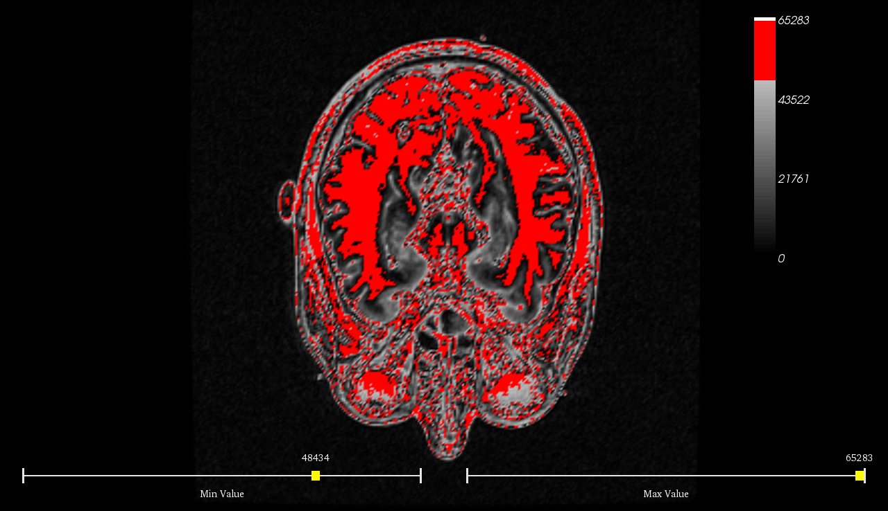
The values ranging from 48434 to 65283 cover the white matter part. However there are other parts also being covered in fragment, like skin, bones, eye balls, etc.
Next try highlighting the gray matter, see below.
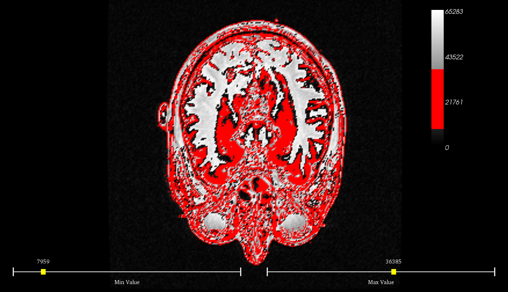
The values ranging from 7959 to 36385 cover the gray matter part. However there are other parts also being covered in fragment, like skin, bones, eye balls, etc.
The values ranging from 0 to 7958 belong to the outside of the head. The values ranging from 36386 to 48433 cover a variety of parts of brain in fragment, which can be considered as the transition between the above two, see below.
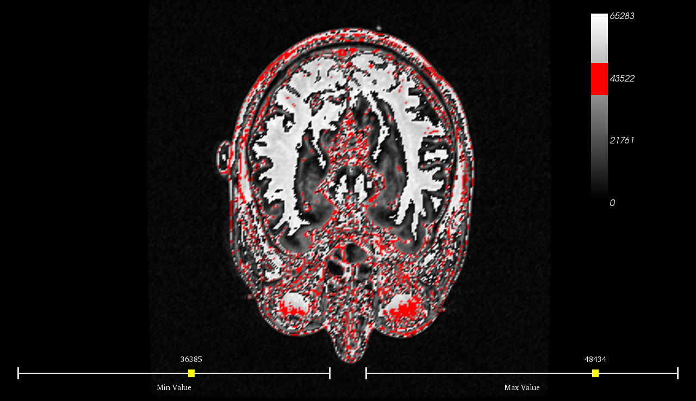
Design the continuous color map:
Use an isoluminant color map which fades from a full saturation to zero saturation while having its hue fixed to 0.0 (red) and lightness fixed to 1.0. The color with zero saturation represents the threshold value (7959) below which the values are from outside the head, and the color with full saturation representing the largest value (65283). The part whose value is below 7959 is mapped to black. The visualization result is shown below. The button on the left side of the bottom is the button to switch between continuous color map and discrete color map. Now it shows a continuous color progression thumbnail to indicate the continuous color mapping mode.
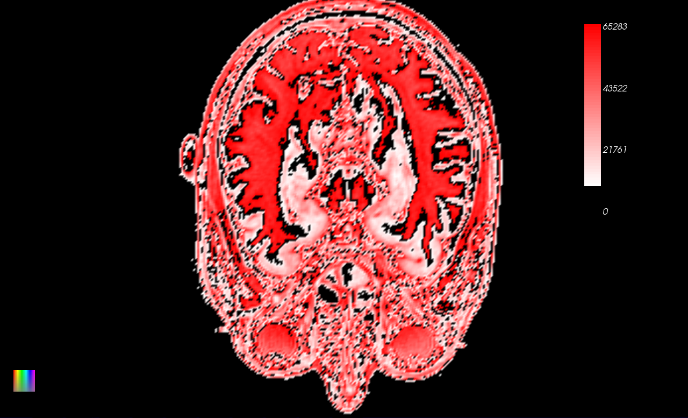
It can be seen that the white matter and gray matter are distinguished well while other anatomical parts are in the transitional value range. Since there is just one scalar value changing continuously in the data set, here I choose an uniform change in saturation to represent the value variation.
Design the discrete color map:
As I mentioned above, the values in the data set are roughly divided into four ranges -- white matter, gray matter, transitional part and the part outside the head. Referring to the brain MRI picture shown below (http://en.wikipedia.org/wiki/File:Brain_MRI_150443_rgbca_t1_t2_t2STIR_misreg.png), I designed the discrete color map in this way -- values in white matter part map to dark red, values in gray matter part map to cyan, values in transitional part map to yellow, and values in the part outside the head map to black. The HSV values of the colors are obtained from the picture shown below.
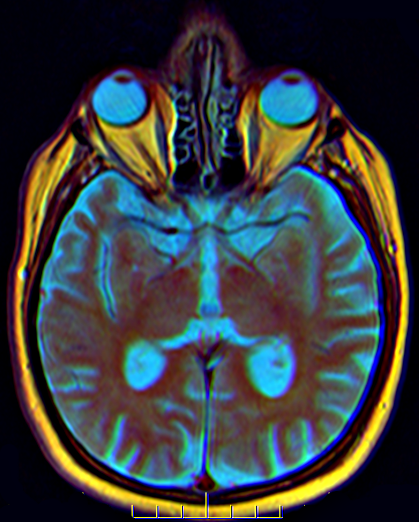
The visualization result is shown below. The switch button shows a discrete color progression thumbnail to indicate the discrete color mapping mode.
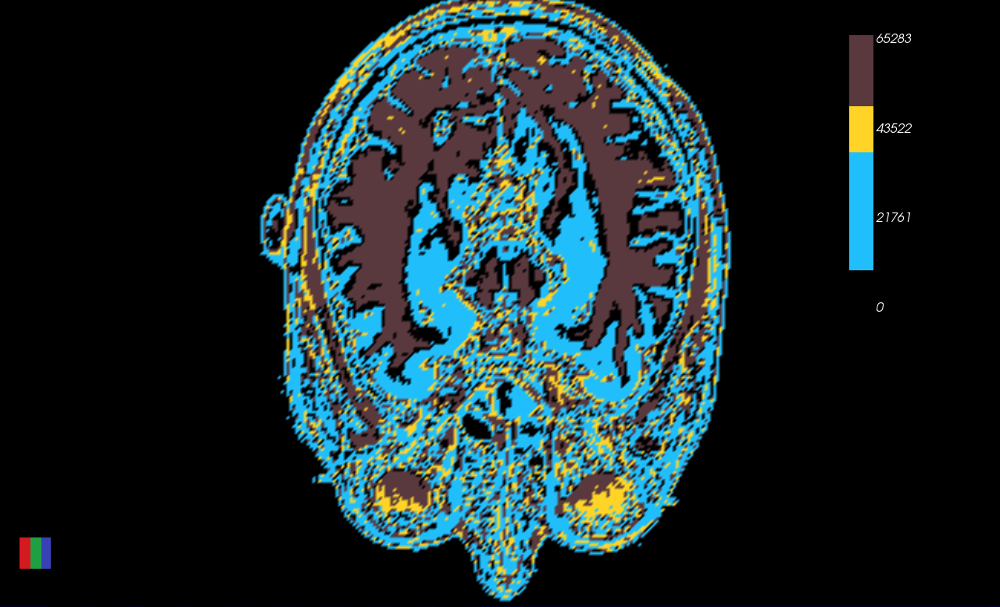
It can be seen that the white matter is distinguished well while other anatomical parts are kind of mixed together. Since it is discrete color mapping, there is no interpolation between control points, thus the transition is abrupt when compared with continuous color mapping. The advantage of discrete color mapping is that the distinction between different parts is more obvious.
The following are the visualization results of data sets axial2.vtk and axial3.vtk under the same color map.
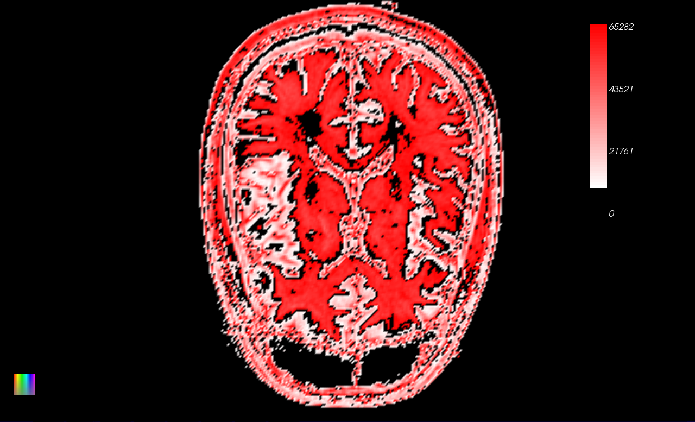
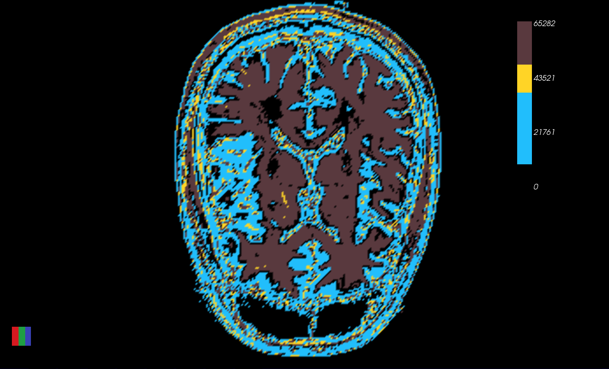
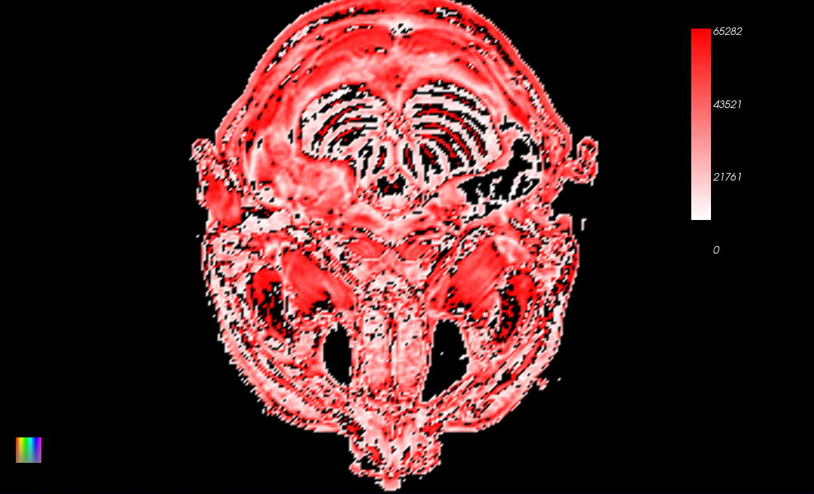
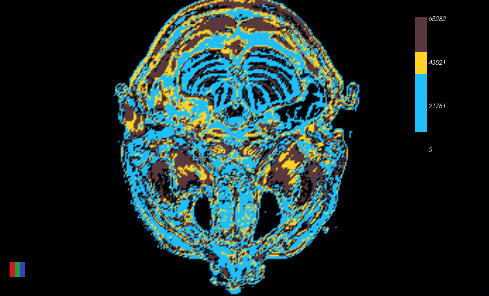
WestUS
The largest value in the data set is 3924 and the smallest value -4729. Similar to MRI dataset, I use the isoluminant color map which fades from a full saturation to zero saturation while having its hue fixed to 240°/360° (blue) and lightness fixed to 1.0. The color with zero saturation represents the largest value (3924) and the color with full saturation representing the smallest value (-4729). The visualization result is shown below. The button on the left side of the bottom is the button to switch between different color maps. No.1 indicates this single hue isoluminant color map.
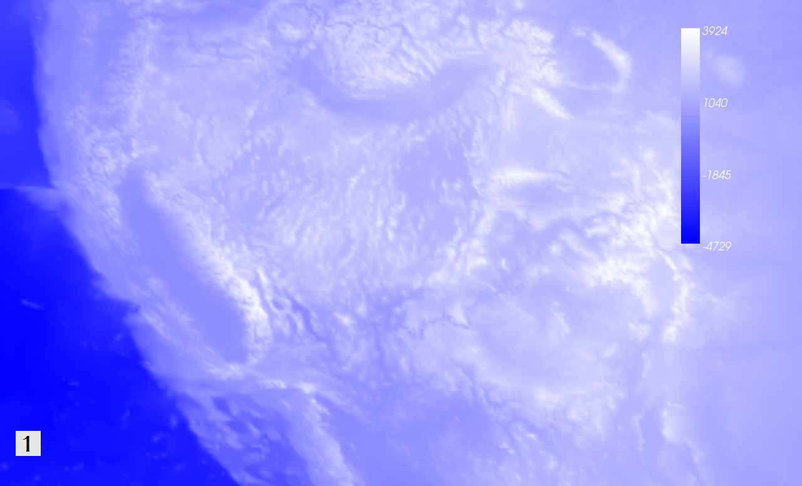
Since the values change from positive to negative in the data set, the bi-polar color map which transits from one color to the other by passing through an unsaturated color (white or yellow) can be a good choice because it divides the scalar values into three logical regions: low, medium, and high values. These regions provide visual cues that are helpful for understanding data[1]. Here I choose blue (cool color) and red (warm color) as the two pole colors. For the value in the middle I choose light gray as the transition. The visualization result is shown below.
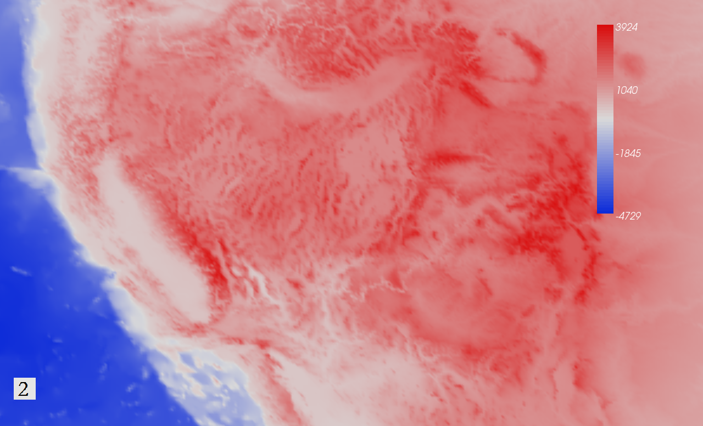
The third color map can be the blended hue color map[2] which uses related hues to blend together the two end point hues. This type of color progression is typically used to show elevation changes. For example from yellow through orange to brown. The visualization result is shown below.
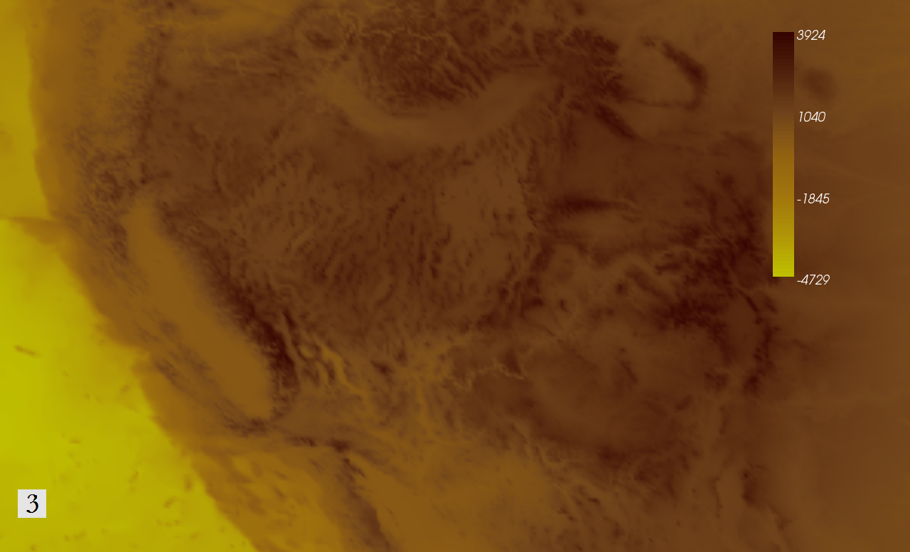
All the above three color maps are continuous color maps. For the fouth one I use a discrete color map, which is the discretized version of the third color map. The visualization result is shown below.
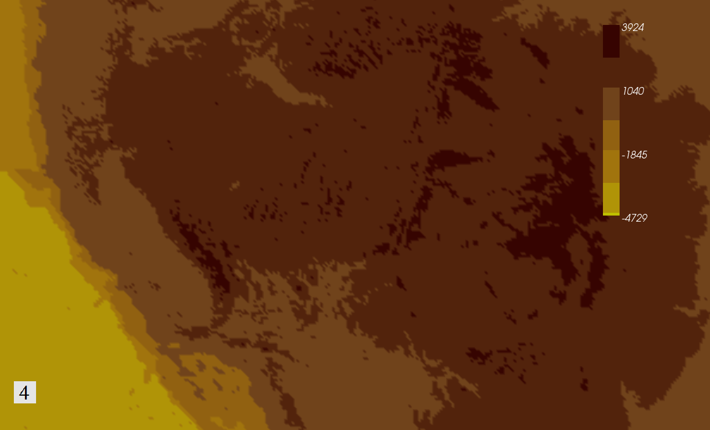
Comparing the four color maps, I prefer the second one personally. Because it is aesthetically pleasing and also give a good representation of the data at the same time.
[1] Kenneth Moreland. 2009. Diverging Color Maps for Scientific Visualization. In Proceedings of the 5th International Symposium on Advances in Visual Computing: Part II (ISVC '09)
[2] http://en.wikipedia.org/wiki/Choropleth_map
{kind=link}
{kind=link}
{kind=link}
{kind=link}
{kind=link}
{kind=link}
{kind=link}
{kind=link}
{kind=link}
{kind=link}